Components for 1D translational mechanical drive trains
This package contains basic components 1D mechanical translational drive trains.
Extends from Modelica.Icons.Package (Icon for standard packages).
| Name | Description |
|---|---|
| 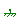 Fixed | Fixed flange |
| Mass | Sliding mass with inertia |
| 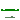 Rod | Rod without inertia |
| 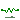 Spring | Linear 1D translational spring |
| 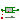 Damper | Linear 1D translational damper |
| SpringDamper | Linear 1D translational spring and damper in parallel |
| 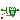 ElastoGap | 1D translational spring damper combination with gap |
| 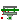 SupportFriction | Coulomb friction in support |
| 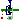 Brake | Brake based on Coulomb friction |
| 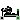 IdealGearR2T | Gearbox transforming rotational into translational motion |
| Simple 1-dim. model of an ideal rolling wheel without inertia | |
| Resistance of a rolling wheel | |
| 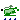 Vehicle | Simple vehicle model |
| InitializeFlange | Initializes a flange with pre-defined position, speed and acceleration (usually, this is reference data from a control bus) |
| 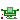 MassWithStopAndFriction | Sliding mass with hard stop and Stribeck friction |
| RelativeStates | Definition of relative state variables |
| 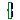 GeneralForceToPositionAdaptor | Signal adaptor for a Translational flange with position, speed, and acceleration as outputs and force as input (especially useful for FMUs) |
| 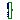 GeneralPositionToForceAdaptor | Signal adaptor for a Translational flange with force as output and position, speed and acceleration as input (especially useful for FMUs) |
Fixed flange
The flange of a 1D translational mechanical system fixed at an position s0 in the housing. May be used:
| Name | Description |
|---|---|
| s0 | Fixed offset position of housing [m] |
| Name | Description |
|---|---|
| flange |
Sliding mass with inertia
Sliding mass with inertia, without friction and two rigidly connected flanges.
The sliding mass has the length L, the position coordinate s is in the middle. Sign convention: A positive force at flange flange_a moves the sliding mass in the positive direction. A negative force at flange flange_a moves the sliding mass to the negative direction.
Extends from Translational.Interfaces.PartialRigid (Rigid connection of two translational 1D flanges).
| Name | Description |
|---|---|
| m | Mass of the sliding mass [kg] |
| L | Length of component, from left flange to right flange (= flange_b.s - flange_a.s) [m] |
| Initialization | |
| s | Absolute position of center of component (s = flange_a.s + L/2 = flange_b.s - L/2) [m] |
| Advanced | |
| stateSelect | Priority to use s and v as states |
| Name | Description |
|---|---|
| flange_a | (left) driving flange (flange axis directed into cut plane, e. g. from left to right) |
| flange_b | (right) driven flange (flange axis directed out of cut plane) |
 Modelica.Mechanics.Translational.Components.Rod
Modelica.Mechanics.Translational.Components.RodRod without inertia
A translational rod without inertia and two rigidly connected flanges.
Extends from Translational.Interfaces.PartialRigid (Rigid connection of two translational 1D flanges).
| Name | Description |
|---|---|
| L | Length of component, from left flange to right flange (= flange_b.s - flange_a.s) [m] |
| Name | Description |
|---|---|
| flange_a | (left) driving flange (flange axis directed into cut plane, e. g. from left to right) |
| flange_b | (right) driven flange (flange axis directed out of cut plane) |
Linear 1D translational spring
A linear 1D translational spring. The component can be connected either between two sliding masses, or between a sliding mass and the housing (model Fixed), to describe a coupling of the sliding mass with the housing via a spring.
Extends from Translational.Interfaces.PartialCompliant (Compliant connection of two translational 1D flanges).
| Name | Description |
|---|---|
| c | Spring constant [N/m] |
| s_rel0 | Unstretched spring length [m] |
| Initialization | |
| s_rel | Relative distance (= flange_b.s - flange_a.s) [m] |
| Name | Description |
|---|---|
| flange_a | (left) driving flange (flange axis directed into cut plane, e. g. from left to right) |
| flange_b | (right) driven flange (flange axis directed out of cut plane) |
Linear 1D translational damper
Linear, velocity dependent damper element. It can be either connected between a sliding mass and the housing (model Fixed), or between two sliding masses.
Extends from Translational.Interfaces.PartialCompliantWithRelativeStates (Base model for the compliant connection of two translational 1-dim. shaft flanges where the relative position and relative velocities are used as states), Modelica.Thermal.HeatTransfer.Interfaces.PartialElementaryConditionalHeatPortWithoutT (Partial model to include a conditional HeatPort in order to dissipate losses, used for textual modeling, i.e., for elementary models).
| Name | Description |
|---|---|
| d | Damping constant [N.s/m] |
| useHeatPort | = true, if heatPort is enabled |
| Initialization | |
| s_rel | Relative distance (= flange_b.s - flange_a.s) [m] |
| v_rel | Relative velocity (= der(s_rel)) [m/s] |
| Advanced | |
| stateSelect | Priority to use s_rel and v_rel as states |
| s_nominal | Nominal value of s_rel (used for scaling) [m] |
| Name | Description |
|---|---|
| flange_a | (left) driving flange (flange axis directed into cut plane, e. g. from left to right) |
| flange_b | (right) driven flange (flange axis directed out of cut plane) |
| heatPort | Optional port to which dissipated losses are transported in form of heat |
Linear 1D translational spring and damper in parallel
A spring and damper element connected in parallel. The component can be connected either between two sliding masses to describe the elasticity and damping, or between a sliding mass and the housing (model Fixed), to describe a coupling of the sliding mass with the housing via a spring/damper.
Extends from Translational.Interfaces.PartialCompliantWithRelativeStates (Base model for the compliant connection of two translational 1-dim. shaft flanges where the relative position and relative velocities are used as states), Modelica.Thermal.HeatTransfer.Interfaces.PartialElementaryConditionalHeatPortWithoutT (Partial model to include a conditional HeatPort in order to dissipate losses, used for textual modeling, i.e., for elementary models).
| Name | Description |
|---|---|
| c | Spring constant [N/m] |
| d | Damping constant [N.s/m] |
| s_rel0 | Unstretched spring length [m] |
| useHeatPort | = true, if heatPort is enabled |
| Initialization | |
| s_rel | Relative distance (= flange_b.s - flange_a.s) [m] |
| v_rel | Relative velocity (= der(s_rel)) [m/s] |
| Advanced | |
| stateSelect | Priority to use s_rel and v_rel as states |
| s_nominal | Nominal value of s_rel (used for scaling) [m] |
| Name | Description |
|---|---|
| flange_a | (left) driving flange (flange axis directed into cut plane, e. g. from left to right) |
| flange_b | (right) driven flange (flange axis directed out of cut plane) |
| heatPort | Optional port to which dissipated losses are transported in form of heat |
1D translational spring damper combination with gap
This component models a spring damper combination that can lift off. It can be connected between a sliding mass and the housing (model Fixed), to describe the contact of a sliding mass with the housing.
As long as s_rel > s_rel0, no force is exerted (s_rel = flange_b.s - flange_a.s). If s_rel ≤ s_rel0, the contact force is basically computed with a linear spring/damper characteristic. With parameter n≥1 (exponent of spring force), a nonlinear spring force can be modeled:
desiredContactForce = f_ref*|(s_rel - s_rel0)/s_ref|^n + d*der(s_rel)
Note, Hertzian contact is described by:
The above force law leads to the following difficulties:
In the literature there are several proposals to fix problem (2). Especially, often the following model is used (see, e.g., Lankarani, Nikravesh: Continuous Contact Force Models for Impact Analysis in Multibody Systems, Nonlinear Dynamics 5, pp. 193-207, 1994, pdf-download):
f = c*s_rel^n + (d*s_rel^n)*der(s_rel)
However, this and other models proposed in literature violate issue (1), i.e., unphysical pulling forces can occur (if d*der(s_rel) becomes large enough). Note, if the force law is of the form "f = f_c + f_d", then a necessary condition is that |f_d| ≤ |f_c|, otherwise (1) and (2) are violated. For this reason, the most simplest approach is used in the ElastoGap model to fix both problems by using this necessary condition in the force law directly. If s_rel0 = 0, the equations are:
if s_rel ≥ 0 then
f = 0; // contact force
else
f_c = -c*|s_rel|^n; // contact spring force (Hertzian contact force)
f_d2 = d*der(s_rel); // linear contact damper force
f_d = if f_d2 < f_c then f_c else
if f_d2 > -f_c then -f_c else f_d2; // bounded damper force
f = f_c + f_d; // contact force
end if;
Note, since |f_d| ≤ |f_c|, pulling forces cannot occur and the contact force
is always continuous, especially around the start of the penetration at s_rel = s_rel0.
On the contrary, this leads to the contact force f = 0 even if
contact = true is still indicated around the end of the penetration.
This is because contact indicates only the occurrence of geometry penetration.
In order to have consistent units for nonlinear springs, the term c*|s_rel|^n
is replaced by f_ref*|s_rel/s_ref|^n, whereby s_ref is a reference
length for the spring and f_ref is the spring force when
s_rel = s_ref. The default values s_ref = 1
and f_ref = c*s_ref lead to the same results of the two above-mentioned terms.
Setting the advanced parameters s_ref and f_ref for a nonlinear
spring directly gives a cleaner and straightforward parametrization.
For simplicity reasons, both s_ref and f_ref are considered being
positive.
In the next figure, a typical simulation with the ElastoGap model is shown (Examples.ElastoGap) where the different effects are visualized:

Extends from Modelica.Mechanics.Translational.Interfaces.PartialCompliantWithRelativeStates (Base model for the compliant connection of two translational 1-dim. shaft flanges where the relative position and relative velocities are used as states), Modelica.Thermal.HeatTransfer.Interfaces.PartialElementaryConditionalHeatPortWithoutT (Partial model to include a conditional HeatPort in order to dissipate losses, used for textual modeling, i.e., for elementary models).
| Name | Description |
|---|---|
| c | Spring constant [N/m] |
| d | Damping constant [N.s/m] |
| s_rel0 | Unstretched spring length [m] |
| n | Exponent of spring force ( f_c = -f_ref*|(s_rel-s_rel0)/s_ref|^n ) |
| useHeatPort | = true, if heatPort is enabled |
| Initialization | |
| s_rel | Relative distance (= flange_b.s - flange_a.s) [m] |
| v_rel | Relative velocity (= der(s_rel)) [m/s] |
| Advanced | |
| stateSelect | Priority to use s_rel and v_rel as states |
| s_nominal | Nominal value of s_rel (used for scaling) [m] |
| f_ref | Reference spring force at s_ref [N] |
| s_ref | Reference relative compression at which f_c = f_ref [m] |
| Name | Description |
|---|---|
| flange_a | (left) driving flange (flange axis directed into cut plane, e. g. from left to right) |
| flange_b | (right) driven flange (flange axis directed out of cut plane) |
| heatPort | Optional port to which dissipated losses are transported in form of heat |
Coulomb friction in support
This element describes Coulomb friction in support, i.e., a frictional force acting between a flange and the housing. The positive sliding friction force "f" has to be defined by table "f_pos" as function of the absolute velocity "v". E.g.
v | f ---+----- 0 | 0 1 | 2 2 | 5 3 | 8
gives the following table:
f_pos = [0, 0; 1, 2; 2, 5; 3, 8];
Outside of the table, extrapolation through the last two table entries is used. It is assumed that the negative sliding friction force has the same characteristic with negative values. Friction is modelled in the following way:
When the absolute velocity "v" is not zero, the friction force is a function of v and of a constant normal force. This dependency is defined via table f_pos and can be determined by measurements, e.g., by driving the gear with constant velocity and measuring the needed driving force (= friction force).
When the absolute velocity becomes zero, the elements connected by the friction element become stuck, i.e., the absolute position remains constant. In this phase the friction force is calculated from a force balance due to the requirement, that the absolute acceleration shall be zero. The elements begin to slide when the friction force exceeds a threshold value, called the maximum static friction force, computed via:
maximum_static_friction = peak * sliding_friction(v=0) (peak >= 1)
This procedure is implemented in a "clean" way by state events and leads to continuous/discrete systems of equations if friction elements are dynamically coupled which have to be solved by appropriate numerical methods. The method is described in (see also a short sketch in UsersGuide.ModelingOfFriction):
More precise friction models take into account the elasticity of the material when the two elements are "stuck", as well as other effects, like hysteresis. This has the advantage that the friction element can be completely described by a differential equation without events. The drawback is that the system becomes stiff (about 10-20 times slower simulation) and that more material constants have to be supplied which requires more sophisticated identification. For more details, see the following references, especially (Armstrong and Canudas de Wit 1996):
Extends from Modelica.Mechanics.Translational.Interfaces.PartialElementaryTwoFlangesAndSupport2 (Partial model for a component with one translational 1-dim. shaft flange and a support used for textual modeling, i.e., for elementary models), Modelica.Thermal.HeatTransfer.Interfaces.PartialElementaryConditionalHeatPortWithoutT (Partial model to include a conditional HeatPort in order to dissipate losses, used for textual modeling, i.e., for elementary models), Translational.Interfaces.PartialFriction (Base model of Coulomb friction elements).
| Name | Description |
|---|---|
| useSupport | = true, if support flange enabled, otherwise implicitly grounded |
| useHeatPort | = true, if heatPort is enabled |
| f_pos[:, 2] | Positive sliding friction characteristic [N] as function of v [m/s] (v>=0) |
| smoothness | Smoothness of interpolation in f_pos table |
| peak | Peak for maximum friction force at v==0 (f0_max = peak*f_pos[1,2]) |
| Initialization | |
| startForward | = true, if v_relfric=0 and start of forward sliding |
| startBackward | = true, if v_relfric=0 and start of backward sliding |
| locked | = true, if v_relfric=0 and not sliding |
| Advanced | |
| v_small | Relative velocity near to zero (see model info text) [m/s] |
| Name | Description |
|---|---|
| flange_a | (left) driving flange (flange axis directed into cut plane, e. g. from left to right) |
| flange_b | (right) driven flange (flange axis directed out of cut plane) |
| support | Support/housing of component |
| heatPort | Optional port to which dissipated losses are transported in form of heat |
Brake based on Coulomb friction
This component models a brake, i.e., a component where a frictional force is acting between the housing and a flange and a controlled normal force presses the flange to the housing in order to increase friction. The normal force fn has to be provided as input signal f_normalized in a normalized form (0 ≤ f_normalized ≤ 1), fn = fn_max*f_normalized, where fn_max has to be provided as parameter. Friction in the brake is modelled in the following way:
When the absolute velocity "v" is not zero, the friction force is a function of the velocity dependent friction coefficient mu(v), of the normal force "fn", and of a geometry constant "cgeo" which takes into account the geometry of the device and the assumptions on the friction distributions:
frictional_force = cgeo * mu(v) * fn
Typical values of coefficients of friction mu:
The positive part of the friction characteristic mu(v), v >= 0, is defined via table mu_pos (first column = v, second column = mu).
When the absolute velocity becomes zero, the elements connected by the friction element become stuck, i.e., the absolute position remains constant. In this phase the friction force is calculated from a force balance due to the requirement, that the absolute acceleration shall be zero. The elements begin to slide when the friction force exceeds a threshold value, called the maximum static friction force, computed via:
frictional_force = peak * cgeo * mu(v=0) * fn, (peak >= 1)
This procedure is implemented in a "clean" way by state events and leads to continuous/discrete systems of equations if friction elements are dynamically coupled. The method is described in:
More precise friction models take into account the elasticity of the material when the two elements are "stuck", as well as other effects, like hysteresis. This has the advantage that the friction element can be completely described by a differential equation without events. The drawback is that the system becomes stiff (about 10-20 times slower simulation) and that more material constants have to be supplied which requires more sophisticated identification. For more details, see the following references, especially (Armstrong and Canudas de Wit 1996):
Extends from Modelica.Mechanics.Translational.Interfaces.PartialElementaryTwoFlangesAndSupport2 (Partial model for a component with one translational 1-dim. shaft flange and a support used for textual modeling, i.e., for elementary models), Modelica.Thermal.HeatTransfer.Interfaces.PartialElementaryConditionalHeatPortWithoutT (Partial model to include a conditional HeatPort in order to dissipate losses, used for textual modeling, i.e., for elementary models), Translational.Interfaces.PartialFriction (Base model of Coulomb friction elements).
| Name | Description |
|---|---|
| useSupport | = true, if support flange enabled, otherwise implicitly grounded |
| useHeatPort | = true, if heatPort is enabled |
| mu_pos[:, 2] | Positive sliding friction coefficient [-] as function of v [m/s] (v>=0) |
| smoothness | Smoothness of interpolation in mu_pos table |
| peak | Peak for maximum value of mu at v==0 (mu0_max = peak*mu_pos[1,2]) |
| cgeo | Geometry constant containing friction distribution assumption |
| fn_max | Maximum normal force [N] |
| Initialization | |
| startForward | = true, if v_relfric=0 and start of forward sliding |
| startBackward | = true, if v_relfric=0 and start of backward sliding |
| locked | = true, if v_relfric=0 and not sliding |
| Advanced | |
| v_small | Relative velocity near to zero (see model info text) [m/s] |
| Name | Description |
|---|---|
| flange_a | (left) driving flange (flange axis directed into cut plane, e. g. from left to right) |
| flange_b | (right) driven flange (flange axis directed out of cut plane) |
| support | Support/housing of component |
| heatPort | Optional port to which dissipated losses are transported in form of heat |
| f_normalized | Normalized force signal 0..1 (normal force = fn_max*f_normalized; brake is active if > 0) |
 Modelica.Mechanics.Translational.Components.IdealGearR2T
Modelica.Mechanics.Translational.Components.IdealGearR2TGearbox transforming rotational into translational motion
Couples rotational and translational motion, like a toothed wheel with a toothed rack, specifying the ratio of rotational / translational motion.
Extends from Modelica.Mechanics.Rotational.Components.IdealGearR2T (Gearbox transforming rotational into translational motion).
| Name | Description |
|---|---|
| useSupportR | = true, if rotational support flange enabled, otherwise implicitly grounded |
| useSupportT | = true, if translational support flange enabled, otherwise implicitly grounded |
| ratio | Transmission ratio (flange_a.phi/flange_b.s) [rad/m] |
| Name | Description |
|---|---|
| flangeR | Flange of rotational shaft |
| flangeT | Flange of translational rod |
| supportR | Rotational support/housing of component |
| supportT | Translational support/housing of component |
Simple 1-dim. model of an ideal rolling wheel without inertia
Couples rotational and translational motion, like an ideal rolling wheel, specifying the wheel radius.
Extends from Modelica.Mechanics.Rotational.Components.IdealRollingWheel (Simple 1-dim. model of an ideal rolling wheel without inertia).
| Name | Description |
|---|---|
| useSupportR | = true, if rotational support flange enabled, otherwise implicitly grounded |
| useSupportT | = true, if translational support flange enabled, otherwise implicitly grounded |
| radius | Wheel radius [m] |
| Name | Description |
|---|---|
| flangeR | Flange of rotational shaft |
| flangeT | Flange of translational rod |
| supportR | Rotational support/housing of component |
| supportT | Translational support/housing of component |
Resistance of a rolling wheel
Simplified model of the resistance of a rolling wheel, dependent on vertical wheel load (due to gravity, i.e. static only), inclination and rolling resistance coefficient:
flange.f = Cr * fWeight * cos(alpha)
The rolling resistance coefficient Cr is either constant
(given by the parameter CrConstant)
or prescribed by the input cr.
The inclination is either constant (parameter inclinationConstant)
or prescribed by the input inclination.
This corresponds to the road rise over running distance of 100 m which,
in general, is written as a percentage and is equal to tan(α).
For example for a road rising by 10 m over 100 m the
grade = 10 % and, thus, the inclination is 0.1.
Positive inclination means driving uphill, negative inclination means
driving downhill, in case of positive vehicle velocity.
The rolling resistance is independent of velocity here,
but changes its direction with the direction of velocity.
To avoid numerical problems around zero velocity, the rolling
resistance is regularized accordingly within [-v0, v0].
Therefore static friction at vehicle's standstill
is not taken into account.
Extends from Modelica.Mechanics.Translational.Interfaces.PartialForce (Partial model of a force acting at the flange (accelerates the flange)).
| Name | Description |
|---|---|
| useSupport | = true, if support flange enabled, otherwise implicitly grounded |
| fWeight | Wheel load due to gravity [N] |
| useCrInput | Enable signal input for Cr |
| CrConstant | Constant rolling resistance coefficient |
| useInclinationInput | Enable signal input for inclination |
| inclinationConstant | Constant inclination = tan(angle) |
| reg | Type of regularization |
| v0 | Regularization below v0 [m/s] |
| Name | Description |
|---|---|
| flange | Flange of component |
| support | Support/housing of component |
| inclination | Inclination=tan(angle) |
| cr | Rolling resistance coefficient |
Simple vehicle model
This is a simple model of a ground vehicle, comprising the mass, the aerodynamic drag, the rolling resistance and the inclination resistance (caused by the road grade). For all particular resistances, significant variables can be either given by a parameter or input by a time-variable signal.
The vehicle can be driven at the rotational flange flangeR, e.g. by an electric motor and a gearbox.
It is possible to use the vehicle as a passive trailer, leaving the rotational flange flangeR unconnected.
At the translational flange flangeT the vehicle can be coupled with another vehicle,
e.g. as a trailer or to pull a trailer.
It is possible to leave the translational flange flangeT unconnected.
The velocity v and the driven distance s of the vehicle are provided as variables;
the vehicle can be initialized using these variables.
Both the translational vehicle mass and the rotational inertias (e.g. the wheels)
are accelerated when the vehicle is accelerated.
This nature is usually put into account for fundamental vehicle analyses
done either in the rotational or translational domain, e.g. when analysing
vehicle's driveline.
Then, the vehicle mass m can be expressed as an additional
equivalent inertia J_eq = m * R2 or
vice versa rotational inertia J as an additional
equivalent mass m_eq = J/R2,
where R is the wheel radius.
Since this model introduces rolling resistance and inclination resistance as well
where just the vehicle mass plays a role,
the approach of equivalent mass/inertia would lead to incorrect simulation results
and shall therefore not be applied here.
fDrag = Cd*rho*A*(v - vWind)^2/2
Wind velocity is measured in the same direction as velocity of flangeT.
Wind velocity is either constant or prescribed by the input vWind.
fRoll = Cr*m*g*cos(alpha)
Rolling resistance coefficient Cr is either constant
or prescribed by the input cr.
Rolling resistance has a crossover from positive to negative velocity within [-vReg, vReg].
The inclination angle α is either constant or prescribed by
the input inclination = tan(α).
This corresponds to the road rise over running distance of 100 m which,
in general, is written as a percentage.
For example for a road rising by 10 m over 100 m the
grade = 10 % and, thus, the parameter
inclinationConstant = 0.1.
Positive inclination means driving uphill, negative inclination means
driving downhill, in case of positive vehicle velocity.
fGrav = m*g*sin(alpha)
With the inclination angle α described above.
| Name | Description |
|---|---|
| m | Total mass of vehicle [kg] |
| g | Constant gravity acceleration [m/s2] |
| J | Total rotational inertia of drive train [kg.m2] |
| R | Wheel radius [m] |
| Driving resistances | |
| Drag resistance | |
| A | Cross section of vehicle [m2] |
| Cd | Drag resistance coefficient |
| rho | Density of air [kg/m3] |
| useWindInput | Enable signal input for wind velocity |
| vWindConstant | Constant wind velocity [m/s] |
| Rolling resistance | |
| useCrInput | Enable signal input for Cr |
| CrConstant | Constant rolling resistance coefficient |
| vReg | Velocity for regularization around 0 [m/s] |
| Inclination resistance | |
| useInclinationInput | Enable signal input for inclination |
| inclinationConstant | Constant inclination = tan(angle) |
| Name | Description |
|---|---|
| flangeT | Translational flange |
| flangeR | Rotational flange |
| inclination | Inclination=tan(angle) |
| cr | Rolling resistance coefficient |
| vWind | Wind velocity [m/s] |
Initializes a flange with pre-defined position, speed and acceleration (usually, this is reference data from a control bus)
This component is used to optionally initialize the position, speed, and/or acceleration of the flange to which this component is connected. Via parameters use_s_start, use_v_start, use_a_start the corresponding input signals s_start, v_start, a_start are conditionally activated. If an input is activated, the corresponding flange property is initialized with the input value at start time.
For example, if "use_s_start = true", then flange.s is initialized with the value of the input signal "s_start" at the start time.
Additionally, it is optionally possible to define the "StateSelect" attribute of the flange position and the flange speed via parameter "stateSelection".
This component is especially useful when the initial values of a flange shall be set according to reference signals of a controller that are provided via a signal bus.
Extends from Modelica.Blocks.Icons.Block (Basic graphical layout of input/output block).
| Name | Description |
|---|---|
| use_s_start | = true, if initial position is defined by input s_start, otherwise not initialized |
| use_v_start | = true, if initial speed is defined by input v_start, otherwise not initialized |
| use_a_start | = true, if initial acceleration is defined by input a_start, otherwise not initialized |
| stateSelect | Priority to use flange angle and speed as states |
| Name | Description |
|---|---|
| s_start | Initial position of flange [m] |
| v_start | Initial speed of flange [m/s] |
| a_start | Initial angular acceleration of flange [m/s2] |
| flange | Flange that is initialized |
Sliding mass with hard stop and Stribeck friction
This element describes the Stribeck friction characteristics of a sliding mass, i. e. the frictional force acting between the sliding mass and the support. Included is a hard stop for the position.
The surface is fixed and there is friction between sliding mass and surface. The frictional force f is given for positive velocity v by:
f = F_Coulomb + F_prop * v + F_Stribeck * exp (-fexp * v)

The distance between the left and the right connector is given by parameter L. The position of the center of gravity, coordinate s, is in the middle between the two flanges.
There are hard stops at smax and smin, i. e. if
flange_a.s >= smin and flange_b.s <= xmax the sliding mass can move freely.
When the absolute velocity becomes zero, the sliding mass becomes stuck, i.e., the absolute position remains constant. In this phase the friction force is calculated from a force balance due to the requirement that the absolute acceleration shall be zero. The elements begin to slide when the friction force exceeds a threshold value, called the maximum static friction force, computed via:
maximum_static_friction = F_Coulomb + F_Stribeck
This requires the states Stop.s and Stop.v . If these states are eliminated during the index reduction the model will not work. To avoid this any inertias should be connected via springs to the Stop element, other sliding masses, dampers or hydraulic chambers must be avoided.
For more details of the used friction model see the following reference:
The friction model is implemented in a "clean" way by state events and leads to continuous/discrete systems of equations which have to be solved by appropriate numerical methods. The method is described in (see also a short sketch in UsersGuide.ModelingOfFriction):
More precise friction models take into account the elasticity of the material when the two elements are "stuck", as well as other effects, like hysteresis. This has the advantage that the friction element can be completely described by a differential equation without events. The drawback is that the system becomes stiff (about 10-20 times slower simulation) and that more material constants have to be supplied which requires more sophisticated identification. For more details, see the following references, especially (Armstrong and Canudas de Wit 1996):
The dissipated energy is transported in form of heat to the optional heatPort connector that can be enabled via parameter "useHeatPort". Independently whether the heatPort is or is not enabled, the dissipated power is defined with variable "lossPower". If contact occurs at the hard stops, the lossPower is not correctly modelled at this time instant, because the hard stop would introduce a Dirac impulse in the lossPower due to the discontinuously changing kinetic energy of the mass (lossPower is the derivative of the kinetic energy at the time instant of the impact).
Extends from PartialFrictionWithStop (Base model of Coulomb friction elements with stop), Modelica.Thermal.HeatTransfer.Interfaces.PartialElementaryConditionalHeatPortWithoutT (Partial model to include a conditional HeatPort in order to dissipate losses, used for textual modeling, i.e., for elementary models).
| Name | Description |
|---|---|
| smax | Right stop for (right end of) sliding mass [m] |
| smin | Left stop for (left end of) sliding mass [m] |
| L | Length of component, from left flange to right flange (= flange_b.s - flange_a.s) [m] |
| m | Mass [kg] |
| F_prop | Velocity dependent friction [N.s/m] |
| F_Coulomb | Constant friction: Coulomb force [N] |
| F_Stribeck | Stribeck effect [N] |
| fexp | Exponential decay [s/m] |
| useHeatPort | = true, if heatPort is enabled |
| Initialization | |
| startForward | = true, if v_rel=0 and start of forward sliding or v_rel > v_small |
| startBackward | = true, if v_rel=0 and start of backward sliding or v_rel < -v_small |
| locked | = true, if v_rel=0 and not sliding |
| s | Absolute position of center of component (s = flange_a.s + L/2 = flange_b.s - L/2) [m] |
| Advanced | |
| v_small | Relative velocity near to zero (see model info text) [m/s] |
| Name | Description |
|---|---|
| flange_a | (left) driving flange (flange axis directed into cut plane, e. g. from left to right) |
| flange_b | (right) driven flange (flange axis directed out of cut plane) |
| heatPort | Optional port to which dissipated losses are transported in form of heat |
Definition of relative state variables
Usually, the absolute position and the absolute velocity of Modelica.Mechanics.Translational.Inertia models are used as state variables. In some circumstances, relative quantities are better suited, e.g., because it may be easier to supply initial values. In such cases, model RelativeStates allows the definition of state variables in the following way:
An example is given in the next figure
Here, the relative position and the relative velocity between the two masses are used as state variables. Additionally, the simulator selects either the absolute position and absolute velocity of model mass1 or of model mass2 as state variables.
Extends from Translational.Interfaces.PartialTwoFlanges (Component with two translational 1D flanges).
| Name | Description |
|---|---|
| stateSelect | Priority to use the relative angle and relative speed as states |
| Name | Description |
|---|---|
| flange_a | (left) driving flange (flange axis directed into cut plane, e. g. from left to right) |
| flange_b | (right) driven flange (flange axis directed out of cut plane) |
Signal adaptor for a Translational flange with position, speed, and acceleration as outputs and force as input (especially useful for FMUs)
Adaptor between a flange connector and a signal representation of the flange. This component is used to provide a pure signal interface around a Translational model and export this model in form of an input/output block, especially as FMU (Functional Mock-up Unit). Examples of the usage of this adaptor are provided in Translational.Examples.GenerationOfFMUs. This adaptor has force as input and position, velocity and acceleration as output signals.
Extends from Modelica.Blocks.Interfaces.Adaptors.FlowToPotentialAdaptor (Signal adaptor for a connector with flow, 1st derivative of flow, and 2nd derivative of flow as inputs and potential, 1st derivative of potential, and 2nd derivative of potential as outputs (especially useful for FMUs)).
| Name | Description |
|---|---|
| use_pder | Use output for 1st derivative of potential |
| use_pder2 | Use output for 2nd derivative of potential (only if 1st derivative is used, too) |
| use_fder | Use input for 1st derivative of flow |
| use_fder2 | Use input for 2nd derivative of flow (only if 1st derivative is used, too) |
| p | Output for potential [m] |
| pder | Optional output for der(potential) [m/s] |
| pder2 | Optional output for der2(potential) [m/s2] |
| f | Input for flow [N] |
| fder | Optional input for der(flow) [N/s] |
| fder2 | Optional input for der2(flow) [N/s2] |
| Name | Description |
|---|---|
| p | Output for potential [m] |
| pder | Optional output for der(potential) [m/s] |
| pder2 | Optional output for der2(potential) [m/s2] |
| f | Input for flow [N] |
| fder | Optional input for der(flow) [N/s] |
| fder2 | Optional input for der2(flow) [N/s2] |
| flange |
Signal adaptor for a Translational flange with force as output and position, speed and acceleration as input (especially useful for FMUs)
Adaptor between a flange connector and a signal representation of the flange. This component is used to provide a pure signal interface around a Translational model and export this model in form of an input/output block, especially as FMU (Functional Mock-up Unit). Examples of the usage of this adaptor are provided in Translational.Examples.GenerationOfFMUs. This adaptor has position, velocity and acceleration as input signals and force as output signal.
Note, the input signals must be consistent to each other (v=der(s), a=der(v)).
Extends from Modelica.Blocks.Interfaces.Adaptors.PotentialToFlowAdaptor (Signal adaptor for a connector with potential, 1st derivative of potential, and 2nd derivative of potential as inputs and flow, 1st derivative of flow, and 2nd derivative of flow as outputs (especially useful for FMUs)).
| Name | Description |
|---|---|
| use_pder | Use input for 1st derivative of potential |
| use_pder2 | Use input for 2nd derivative of potential (only if 1st derivative is used, too) |
| use_fder | Use output for 1st derivative of flow |
| use_fder2 | Use output for 2nd derivative of flow (only if 1st derivative is used, too) |
| p | Input for potential [m] |
| pder | Optional input for der(potential) [m/s] |
| pder2 | Optional input for der2(potential) [m/s2] |
| f | Output for flow [N] |
| fder | Optional output for der(flow) [N/s] |
| fder2 | Optional output for der2(flow) [N/s2] |
| Name | Description |
|---|---|
| p | Input for potential [m] |
| pder | Optional input for der(potential) [m/s] |
| pder2 | Optional input for der2(potential) [m/s2] |
| f | Output for flow [N] |
| fder | Optional output for der(flow) [N/s] |
| fder2 | Optional output for der2(flow) [N/s2] |
| flange |